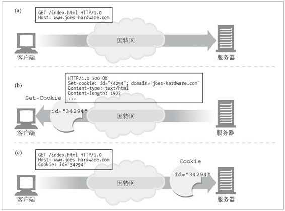
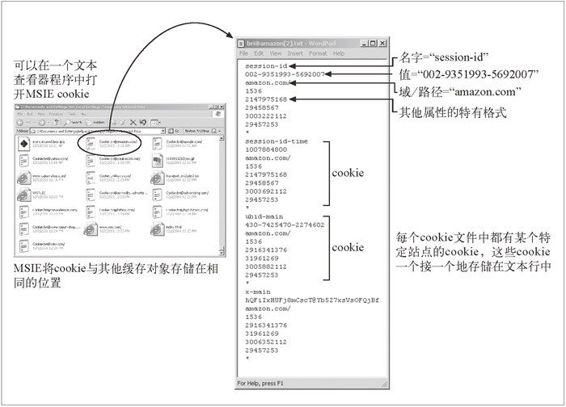
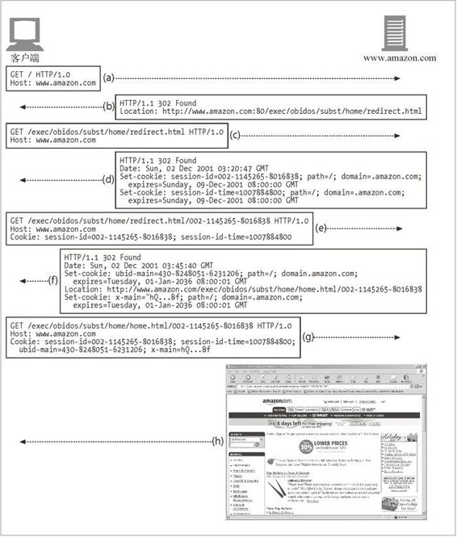

11.6 cookie
cookie 是当前识别用户，实现持久会话的最好方式。前面各种技术中存在的很多问题对它们都没什么影响，但是通常会将它们与那些技术共用，以实现额外的价值。cookie 最初是由网景公司开发的，但现在所有主要的浏览器都支持它。
cookie 非常重要，而且它们定义了一些新的 HTTP 首部，所以我们要比前面那些技术更详细地介绍它们。cookie 的存在也影响了缓存，大多数缓存和浏览器都不允许对任何 cookie 的内容进行缓存。后面的小节对此进行了更为详细的介绍。
11.6.1 cookie的类型
可以笼统地将 cookie 分为两类： 会话 cookie 和持久 cookie。会话 cookie 是一种临时 cookie，它记录了用户访问站点时的设置和偏好。用户退出浏览器时，会话 cookie 就被删除了。持久 cookie 的生存时间更长一些；它们存储在硬盘上，浏览器退出，计算机重启时它们仍然存在。通常会用持久 cookie 维护某个用户会周期性访问的站点的配置文件或登录名。
会话 cookie 和持久 cookie 之间唯一的区别就是它们的过期时间。稍后我们会看到，如果设置了 Discard 参数，或者没有设置 Expires 或 Max-Age 参数来说明扩展的过期时间，这个 cookie 就是一个会话 cookie。
11.6.2 cookie是如何工作的
cookie 就像服务器给用户贴的“嗨，我叫”的贴纸一样。用户访问一个 Web 站点时，这个 Web 站点就可以读取那个服务器贴在用户身上的所有贴纸。
用户首次访问 Web 站点时，Web 服务器对用户一无所知（参见图 11-3a）。Web 服务器希望这个用户会再次回来，所以想给这个用户“拍上”一个独有的 cookie，这样以后它就可以识别出这个用户了。cookie 中包含了一个由名字 = 值（name=value）这样的信息构成的任意列表，并通过 Set-Cookie 或 Set-Cookie2 HTTP 响应（扩展）首部将其贴到用户身上去。

图 11-3 给用户贴一个 cookie
cookie 中可以包含任意信息，但它们通常都只包含一个服务器为了进行跟踪而产生的独特的识别码。比如，在图 11-3b 中，服务器会将一个表示 id="34294" 的 cookie 贴到用户上去。服务器可以用这个数字来查找服务器为其访问者积累的数据 库信息（购物历史、地址信息等）。
但是，cookie 并不仅限于 ID 号。很多 Web 服务器都会将信息直接保存在 cookie 中。比如：
Cookie: name="Brian Totty"; phone="555-1212"
浏览器会记住从服务器返回的 Set-Cookie 或 Set-Cookie2 首部中的 cookie 内容，并将 cookie 集存储在浏览器的 cookie 数据库中（把它当作一个贴有不同国家贴纸的旅行箱）。将来用户返回同一站点时（参见图 11-3c），浏览器会挑中那个服务器贴到用户上的那些 cookie，并在一个 cookie 请求首部中将其传回去。
11.6.3 cookie罐：客户端的状态
cookie 的基本思想就是让浏览器积累一组服务器特有的信息，每次访问服务器时都将这些信息提供给它。因为浏览器要负责存储 cookie 信息，所以此系统被称为客户端侧状态（client-side state）。这个 cookie 规范的正式名称为 HTTP 状态管理机制（HTTP state management mechanism）。
网景的Navigator的cookie
不同的浏览器会以不同的方式来存储 cookie。网景的 Navigator 会将 cookie 存储在一个名为 cookies.txt 的文本文件中。例如：
# Netscape HTTP Cookie File
# http://www.netscape.com/newsref/std/cookie_spec.html
# This is a generated file! Do not edit.
#
# domain allh path secure expires name value
www.fedex.com FALSE / FALSE 1136109676 cc /us/
.bankofamericaonline.com TRUE / FALSE 1009789256 state CA
.cnn.com TRUE / FALSE 1035069235 SelEdition www
secure.eepulse.net FALSE /eePulse FALSE 1007162968 cid %FE%FF%002
www.reformamt.org TRUE /forum FALSE 1033761379 LastVisit 1003520952
www.reformamt.org TRUE /forum FALSE 1033761379 UserName Guest
...
文本文件中的每一行都代表一个 cookie。有 7 个用 tab 键分隔的字段。
domain（域）
cookie 的域。
allh
是域中所有的主机都获取 cookie，还是只有指定了名字的主机获取。
path（路径）
域中与 cookie 相关的路径前缀。
secure（安全）
是否只有在使用 SSL 连接时才发送这个 cookie。
expiration（过期）
从格林尼治标准时间 1970 年 1 月 1 日 00:00:00 开始的 cookie 过期秒数。
name（名字）
cookie 变量的名字。
value（值）
cookie 变量的值。
微软Internet Explorer的cookie
微软的 Internet Explorer 将 cookie 存储在高速缓存目录下独立的文本文件中。可以通过浏览这个目录来查看 cookie，如图 11-4 所示。Internet Explorer 中 cookie 文件格式是特有的，但很多字段都很容易理解。cookie 一个接一个地存储在文件中，每个 cookie 都由多行构成。

图 11-4 Internet Explorer 的 cookie 存储在缓存目录下独立的文本文件中
文件中每个 cookie 的第一行中都包含了 cookie 的变量名。下一行是变量的值。第三行是域和路径。剩下的行就是一些特有的数据，可能包含日期和一些标记。
11.6.4 不同站点使用不同的cookie
浏览器内部的 cookie 罐中可以有成百上千个 cookie，但浏览器不会将每个 cookie 都发送给所有的站点。实际上，它们通常只向每个站点发送 2 ～ 3 个 cookie。原因如下。
对所有这些 cookie 字节进行传输会严重降低性能。浏览器实际传输的 cookie 字节数要比实际的内容字节数多！
cookie 中包含的是服务器特有的名值对，所以对大部分站点来说，大多数 cookie 都只是无法识别的无用数据。
将所有的 cookie 发送给所有站点会引发潜在的隐私问题，那些你并不信任的站点也会获得你只想发给其他站点的信息。
总之，浏览器只向服务器发送服务器产生的那些 cookie。joes-hardware.com 产生的 cookie 会被发送给 joes-hardware.com，不会发送给 bobs-books.com 或 marys-movies.com。
很多 Web 站点都会与第三方厂商达成协议，由其来管理广告。这些广告被做得像 Web 站点的一个组成部分，而且它们确实发送了持久 cookie。用户访问另一个由同一广告公司提供服务的站点时，（由于域是匹配的）浏览器就会再次回送早先设置的持久 cookie。营销公司可以将此技术与 Referer 首部结合，暗地里构建一个用户档案和浏览习惯的详尽数据集。现代的浏览器都允许用户对隐私特性进行设置，以限制第三方 cookie 的使用。
cookie的域属性
产生 cookie 的服务器可以向 Set-Cookie 响应首部添加一个 Domain 属性来控制哪些站点可以看到那个 cookie。比如，下面的 HTTP 响应首部就是在告诉浏览器将 cookie user="mary17" 发送给域 ".airtravelbargains.com" 中的所有站点：
Set-cookie: user="mary17"; domain="airtravelbargains.com"
如果用户访问的是 www.airtravelbargains.com、specials.airtravelbargains.com 或任意 以 .airtravelbargains.com 结尾的站点，下列 Cookie 首部都会被发布出去：
Cookie: user="mary17"
cookie路径属性
cookie 规范甚至允许用户将 cookie 与部分 Web 站点关联起来。可以通过 Path 属性来实现这一功能，在这个属性列出的 URL 路径前缀下所有 cookie 都是有效的。
例如，某个 Web 服务可能是由两个组织共享的，每个组织都有独立的 cookie。站点 www.airtravelbargains.com 可能会将部分 Web 站点用于汽车租赁——比如，http://www.airtravelbargains.com/autos/——用一个独立的 cookie 来记录用户喜欢的汽车尺寸。可能会生成一个如下所示的特殊汽车租赁 cookie：
Set-cookie: pref=compact; domain="airtravelbargains.com"; path=/autos/
如果用户访问 http://www.airtravelbargains.com/specials.html，就只会获得这个 cookie：
Cookie: user="mary17"
但如果访问 http://www.airtravelbargains.com/autos/cheapo/index.html，就会获得这两个 cookie：
Cookie: user="mary17"
Cookie: pref=compact
因此，cookie 就是由服务器贴到客户端上，由客户端维护的状态片段，只会回送给那些合适的站点。下面我们来更仔细地看看 cookie 的技术和标准。
11.6.5 cookie成分
现在使用的 cookie 规范有两个不同的版本：cookies 版本 0（有时被称为 Netscape cookies） 和 cookies 版本 1（RFC 2965）。cookies 版本 1 是对 cookies 版本 0 的扩展，应用不如后者广泛。
cookie 规范版本 0 和版本 1 都不是作为 HTTP/1.1 规范的一部分提供的。表 11-2 对两个主要的附属文档进行了总结，这两个文档对 cookie 的使用进行了很好的描述。
表11-2 cookie规范
| 标 题 | 描 述 | 位 置 |
|---|---|---|
| 持久客户端状态： HTTP cookies | 最初的Netscape cookie 标准 | http://home.netscape.com/newsref/std/cookie_spec.html |
| RFC 2965：HTTP 状态管理机制 | 2000 年10 月的cookie 标准，废弃了RFC 2109 | http://www.ietf.org/rfc/rfc2965.txt |
11.6.6 cookies版本0（Netscape）
最初的 cookie 规范是由网景公司定义的。这些“版本 0”的 cookie 定义了 Set- Cookie 响应首部、cookie 请求首部以及用于控制 cookie 的字段。版本 0 的 cookie 看起来如下所示：
Set-Cookie: name=value [; expires=date] [; path=path] [; domain=domain]
[; secure]
Cookie: name1=value1 [; name2=value2] ...
版本0的 Set-Cookie 首部
Set-Cookie 首部有一个强制性的 cookie 名和 cookie 值。后面跟着可选的 cookie 属性，中间由分号分隔。表 11-3 描述了 Set-Cookie 字段。
表11-3 版本0（网景）的 Set-Cookie 属性
| Set-Cookie属性 | 描述及实例 |
| NAME=VALUE | 强制的。NAME 和 VALUE 都是字符序列，除非包含在双引号内，否则不包括分号、逗号、等号和空格。Web 服务器可以创建任意的 NAME=VALUE 关联，在后继对站点的访问中会将其送回给 Web 服务器： Set-Cookie: customer=Mary |
| Expires | 可选的。这个属性会指定一个日期字符串，用来定义cookie 的实际生存期。一旦到了过期日期，就不再存储或发布这个 cookie 了。日期的格式为： Weekday, DD-Mon-YY HH:MM:SS GMT 唯一合法的时区为GMT，各日期元素之间的分隔符一定要是长划线。如果没有指定Expires， cookie 就会在用户会话结束时过期：Set-Cookie: foo=bar; expires=Wednesday, 09-Nov-99 23:12:40 GMT |
| Domain | 可选的。浏览器只向指定域中的服务器主机名发送cookie。这样服务器就将 cookie 限制在了特定的域中。acme.com 域就与 anvil.acme.com 和 shipping.crate.acme.com 相匹配，但与 www.cnn.com 就不匹配了。 只有指定域中的主机才能为一个域设置cookie，这些域中至少要有两个或三个句号，以防止出现.com、.edu 和 va.us 等形式的域。这里列出了一组固定的特定高层域，落在这个范围中的域只需要两个句号。所有其他域都至少需要三个句号。特定的高层域包括：.com、.edu、.net、.org、.gov、.mil、.int、.biz、.info、.name、.museum、.coop、.aero 和.pro。 如果没有指定域，就默认为产生Set-Cookie 响应的服务器的主机名： Set-Cookie: SHIPPING=FEDEX; domain="joes-hardware.com" |
| Path | 可选的。通过这个属性可以为服务器上特定的文档分配cookie。如果 Path 属性是一个 URL 路径前缀，就可以附加一个cookie。路径 /foo 与 /foobar 和 /foo/bar.html 相匹配。路径“/”与域名中所有内容都匹配。 如果没有指定路径，就将其设置为产生 Set-Cookie 响应的 URL 的路径： Set-Cookie: lastorder=00183; path=/orders |
| Secure | 可选的。如果包含了这一属性，就只有在 HTTP 使用 SSL 安全连接时才会发送 cookie： Set-Cookie: private_id=519; secure |
版本0的Cookie首部
客户端发送请求时，会将所有与域、路径和安全过滤器相匹配的未过期 cookie 都发送给这个站点。所有 cookie 都被组合到一个 Cookie 首部中：
Cookie: session-id=002-1145265-8016838; session-id-time=1007884800
11.6.7 cookies版本1（RFC 2965）
RFC 2965（以前的 RFC 2109）定义了一个 cookie 的扩展版本。这个版本 1 标准引入了 Set-Cookie2 首部和 Cookie2 首部，但它也能与版本 0 系统进行互操作。
RFC 2965 cookie 标准比原始的网景公司的标准略微复杂一些，还未得到完全的支持。RFC 2965 cookie 的主要改动包括下列内容。
为每个 cookie 关联上解释性文本，对其目的进行解释。
允许在浏览器退出时，不考虑过期时间，将 cookie 强制销毁。
用相对秒数，而不是绝对日期来表示 cookie 的 Max-Age。
通过 URL 端口号，而不仅仅是域和路径来控制 cookie 的能力。
通过 Cookie 首部回送域、端口和路径过滤器（如果有的话）。
为实现互操作性使用的版本号。
在 Cookie 首部从名字中区分出附加关键字的 $ 前缀。
cookie 版本 1 的语法如下所示：
set-cookie = "Set-Cookie2:" cookies
cookies = 1#cookie
cookie = NAME "=" VALUE *(";" set-cookie-av)
NAME = attr
VALUE = value
set-cookie-av = "Comment" "=" value
| "CommentURL" "=" <"> http_URL <">
| "Discard"
| "Domain" "=" value
| "Max-Age" "=" value
| "Path" "=" value
| "Port" [ "=" <"> portlist <"> ]
| "Secure"
| "Version" "=" 1*DIGIT
portlist = 1#portnum
portnum = 1*DIGIT
cookie = "Cookie:" cookie-version 1*((";" | ",") cookievalue)
cookie-value = NAME "=" VALUE [";" path] [";" domain] [";" port]
cookie-version = "$Version" "=" value
NAME = attr
VALUE = value
path = "$Path" "=" value
domain = "$Domain" "=" value
port = "$Port" [ "=" <"> value <"> ]
cookie2 = "Cookie2:" cookie-version
版本1的Set-Cookie2首部
版本 1 的 cookie 标准比网景公司标准的可用属性要多。表 11-4 对这些属性做了快速汇总。更详细的解释请参见 RFC 2965。
表11-4 版本1（RFC 2965）的 Set-Cookie2 属性
| Set-Cookie2属性 | 描述及实例 |
| NAME=VALUE | 强制的。Web 服务器可以创建任意的 NAME=VALUE 关联，可以在后继对站点的访问中将其发回给 Web 服务器。“$ ”是保留字符，所以名字一定不能以它开头 |
| Version | 强制的。这个属性的值是一个整数，对应于 cookie 规范的版本。RFC 2965 为版本1： Set-Cookie2: Part="Rocket_Launcher_0001"; Version="1" |
| Comment | 可选。这个属性说明了服务器准备如何使用这个cookie。用户可以通过检查此策略来确定是否允许使用带有这个 cookie 的会话。这个值必须采用 UTF-8 编码 |
| CommentURL | 可选。这个属性提供了一个 URL 指针，指向详细描述了 cookie 目的及策略的文档。用户可以通过查看此策略来判定是否允许使用带有这个 cookie 的会话 |
| Discard | 可选。如果提供了这个属性，就会在客户端程序终止时，指示客户端放弃这个 cookie |
| Domain | 可选。浏览器只向指定域中的服务器主机名发送 cookie。这样服务器就可以将 cookie 限制在特定域中了。acme.com 域与主机名 anvil.acme.com 和 shipping.crate.acme.com 相匹配，但不匹配于www.cnn.com。域名匹配的规则基本上与 Netscape cookie 一样，但有几条附加的规则。细节请参见 RFC 2965 |
| Max-Age | 可选。这个属性的值是一个整数，用于设置以秒为单位的 cookie 生存期。客户端应该根据 HTTP/1.1 的使用期计算规则来计算 cookie 的使用期。cookie 的使用期比 Max-Age 大时，客户端就应该将这个 cookie 丢弃。值为零说明应该立即将那个 cookie 丢弃 |
| Path | 可选。通过这个属性可以为服务器上的特定文档指定 cookie。如果 Path 属性是一个 URL 路径的前缀，就可以附加一个 cookie。路径 /foo 匹配于 /foobar 和 /foo/bar.html。路径“/”匹配于域中所有内容。如果没有指定路径，就将其设置为生成 Set-Cookie 响应的URL 的路径 |
| Port | 可选。这个属性可以单独作为关键字使用，也可以包含一个由逗号分隔的、可以应用 cookie 的端口列表。如果有端口列表，就只能向端口与列表中的端口相匹配的服务器提供 cookie。如果单独提供关键字 Port 而没有值，就只能向当前响应服务器的端口号提供 cookie： Set-Cookie2: foo="bar"; Version="1"; |
| Secure | 可选。如果包含这个属性，就只有在 HTTP 使用 SSL 安全连接时才能发送 cookie |
版本1的 Cookie 首部
版本 1 的 cookie 会带回与传送的每个 cookie 相关的附加信息，用来描述每个 cookie 途径的过滤器。每个匹配的 cookie 都必须包含来自相应 Set-Cookie2 首部的所有 Domain、Port 或 Path 属性。
比如，假设客户端以前曾收到下列五个来自 Web 站点 www.joes-hardware.com 的 Set-Cookie2 响应：
Set-Cookie2: ID="29046"; Domain=".joes-hardware.com"
Set-Cookie2: color=blue
Set-Cookie2: support-pref="L2"; Domain="customer-care.joes-hardware.com"
Set-Cookie2: Coupon="hammer027"; Version="1"; Path="/tools"
Set-Cookie2: Coupon="handvac103"; Version="1"; Path="/tools/cordless"
如果客户端对路径 /tools/cordless/specials.html 又发起了一次请求，就会同时发送这样一个很长的 Cookie 首部：
Cookie: $Version="1";
ID="29046"; $Domain=".joes-hardware.com";
color="blue";
Coupon="hammer027"; $Path="/tools";
Coupon="handvac103"; $Path="/tools/cordless"
注意，所有匹配 cookie 都是和它们的 Set-Cookie2 过滤器一同传输的，而且保留关键字都是以美元符号（$）开头的。
版本1的 Cookie2 首部和版本协商
Cookie2 请求首部负责在能够理解不同 cookie 规范版本的客户端和服务器之间进行互操作性的协商。Cookie2 首部告知服务器，用户 Agent 代理理解新形式的 cookie，并提供了所支持的 cookie 标准版本（将其称为 Cookie-Version 更合适一些）：
Cookie2: $Version="1"
如果服务器理解新形式的 cookie，就能够识别出 Cookie2 首部，并在响应首部发送 Set-Cookie2（而不是 Set-Cookie）。如果客户端从同一个响应中既获得了 Set-Cookie 首部，又获得了 Set-Cookie2 首部，就会忽略老的 Set-Cookie 首部。
如果客户端既支持版本 0 又支持版本 1 的 cookie，但从服务器获得的是版本 0 的 Set-Cookie 首部，就应该带着版本 0 的 Cookie 首部发送 cookie。但客户端还应该发送 Cookie2: $Version=“1”来告知服务器它是可以升级的。
11.6.8 cookie与会话跟踪
可以用 cookie 在用户与某个 Web 站点进行多项事务处理时对用户进行跟踪。电子商务 Web 站点用会话 cookie 在用户浏览时记录下用户的购物车信息。我们以流行的购物网站 Amazon.com 为例。在浏览器中输入 http://www.amazon.com 时，就启动了一个事务链，在这些事务中 Web 服务器会通过一系列的重定向、URL 重写以 及 cookie 设置来附加标识信息。
图 11-5 显示了从一次 Amazon.com 访问中捕获的事务序列。

图 11-5 Amazon.com 网站用会话 cookie 来跟踪用户
图 11-5a——浏览器首次请求 Amazon.com 根页面。
图 11-5b——服务器将客户端重定向到一个电子商务软件的 URL 上。
图 11-5c——客户端对重定向的 URL 发起一个请求。
图 11-5d——服务器在响应上贴上两个会话 cookie，并将用户重定向到另一个 URL，这样客户端就会用这些附加的 cookie 再次发出请求。这个新的 URL 是个胖 URL，也就是说有些状态嵌入到 URL 中去了。如果客户端禁止了 cookie，只要用户一直跟随着 Amazon.com 产生的胖 URL 链接，不离开网站，仍然可以实现一些基本的标识功能。
图 11-5e——客户端请求新的 URL，但现在会传送两个附加的 cookie。
图 11-5f——服务器重定向到 home.html 页面，并附加另外两个 cookie。
图 11-5g——客户端获取 home.html 页面并将所有四个 cookie 都发送出去。
图 11-5h——服务器回送内容。
11.6.9 cookie与缓存
缓存那些与 cookie 事务有关的文档时要特别小心。你不会希望给用户分配一个过去某些用户用过的 cookie，或者更糟糕的是，向一个用户展示其他人私有文档的内容。
cookie 和缓存的规则并没有很好地建立起来。下面是处理缓存时的一些指导性规则。
如果无法缓存文档，要将其标示出来
文档的所有者最清楚文档是否是不可缓存的。如果文档不可缓存，就显式地注明——具体来说，如果除了 Set-Cookie 首部之外文档是可缓存的，就使用 Cache-Control:no-cache="Set-Cookie"。另一种更通用的做法是为可缓存文档使用 Cache-Control:public，这样有助于节省 Web 中的带宽。
缓存 Set-Cookie 首部时要小心
如果响应中有 Set-Cookie 首部，就可以对主体进行缓存（除非被告知不要这么做），但要特别注意对 Set-Cookie 首部的缓存。如果向多个用户发送了相同的 Set-Cookie 首部，可能会破坏用户的定位。
有些缓存在将响应缓存起来之前会删除 Set-Cookie 首部，但这样也会引发一些问题，因为在没有缓存的时候，通常都会有 cookie 贴在客户端上，但由缓存提供服务的客户端就不会有 cookie 了。强制缓存与原始服务器重新验证每条请求，并将返回的所有 Set-Cookie 首部都合并到客户端的响应中去，就可以改善这种状况。原始服务器可以通过向缓存的副本中添加这个首部来要求进行这种再验证：
Cache-Control: must-revalidate, max-age=0
即便内容实际上是可以缓存的，比较保守的缓存可能也会拒绝缓存所有包含 Set-Cookie 首部的响应。有些缓存允许使用缓存 Set-Cookie 图片，但不缓存文本的模式。
小心处理带有 Cookie 首部的请求
带有 Cookie 首部的请求到达时，就在提示我们，得到的结果可能是私有的。一定要将私有内容标识为不可缓存的，但有些服务器可能会犯错，没有将此内容标记为不可缓存的。
有些响应文档对应于携带 Cookie 首部的请求，保守的缓存可能会选择不去缓存这些响应文档。同样，有些缓存允许使用缓存 cookie 图片，而不缓存文本的模式。得到更广泛接受的策略是缓存带有 Cookie 首部的图片，将过期时间设置为零，强制每次都进行再验证。
11.6.10 cookie、安全性和隐私
cookie 是可以禁止的，而且可以通过日志分析或其他方式来实现大部分跟踪记录，所以 cookie 自身并不是很大的安全隐患。实际上，可以通过提供一个标准的审查方法在远程数据库中保存个人信息，并将匿名 cookie 作为键值，来降低客户端到服务器的敏感数据传送频率。
但是，潜在的滥用情况总是存在的，所以，在处理隐私和用户跟踪信息时，最好还是要小心一些。第三方 Web 站点使用持久 cookie 来跟踪用户就是一种最大的滥用。将这种做法与 IP 地址和 Referer 首部信息结合在一起，这些营销公司就可以构建起相当精确的用户档案和浏览模式信息。
尽管有这么多负面的宣传，人们通常还是认为，如果能够小心地确认在向谁提供私人信息，并仔细查阅站点的隐私政策，那么，cookie 会话处理和事务处理所带来的便利性要比大部分风险更重要。
1998 年，计算机事故咨询能力组织（Computer Incident Advisory Capability）（美国能源部的一部分）编写了一份过分使用 cookie 的风险评估报告。下面是那份报告的摘要。
CIAC I-034：因特网cookie
（http://www.ciac.org/ciac/bulletins/i-034.shtml）
问题
cookie是Web服务器用来识别Web用户的小块数据。关于cookie功能的流行说法和谣言之间的比例已经达到了令人不解的地步，使用户恐惧，使管理者忧心。
脆弱性评估
由于使用Web浏览器cookie使得系统被破坏或窃听，从而带来的系统脆弱性本质上并不存在。cookie只能告知Web服务器你以前是否到过某个网站，并在下次访问时将来自Web服务器的一些短小信息（比如用户编码）回送给它。大部分cookie只会持续到用户退出浏览器为止，然后就会被破坏掉。第二种名为持久cookie的cookie有一个过期日期，会在你的硬盘上存储到那个日期为止。无论用户何时返回一个站点，都可以通过持久cookie来识别其身份，以便跟踪用户的浏览习惯。你来自何处，以及访问过哪些Web页面等信息已经存储在Web服务器的日志文件中了，也可以用这些信息来跟踪用户的浏览习惯，只是使用cookie更简单一些罢了。